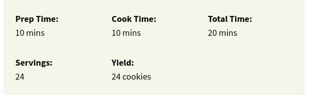
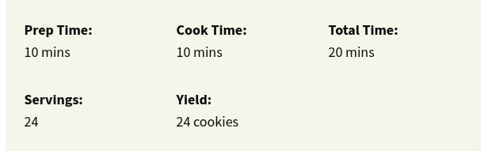

The Best Nostalgic, Slightly Sweeter Chocolate Chip Cookie: Absolutely the Best Chocolate Chip Cookies
:max_bytes(150000):strip_icc():format(webp)/616263-fd278535b9d54ab99d2f6edf63b0b39b.jpg) 

Ingredients
- 1 cup butter flavored shortening
- ¾ cup white sugar
- ¾ cup brown sugar
- 2 large eggs
- 2 teaspoons Mexican vanilla extract
- 2 ¼ cups all-purpose flour
- 1 teaspoon baking soda
- 1 teaspoon salt
- 2 cups milk chocolate chips
Directions
- Preheat the oven to 350 degrees F (175 degrees C). Grease 2 cookie sheets.
- Cream together butter-flavored shortening, brown sugar, and white sugar in a large bowl until light and fluffy. Add eggs, one at a time, beating well after each addition; stir in vanilla.
- Combine flour, baking soda, and salt in a separate bowl; gradually stir into creamed mixture. Fold in chocolate chips until well combined. Drop by rounded spoonfuls onto the prepared cookie sheets.
- Bake in the preheated oven until light brown, 8 to 10 minutes. Allow cookies to cool on the baking sheet for 5 minutes before removing to a wire rack to cool completely.
Get Another Recipes :